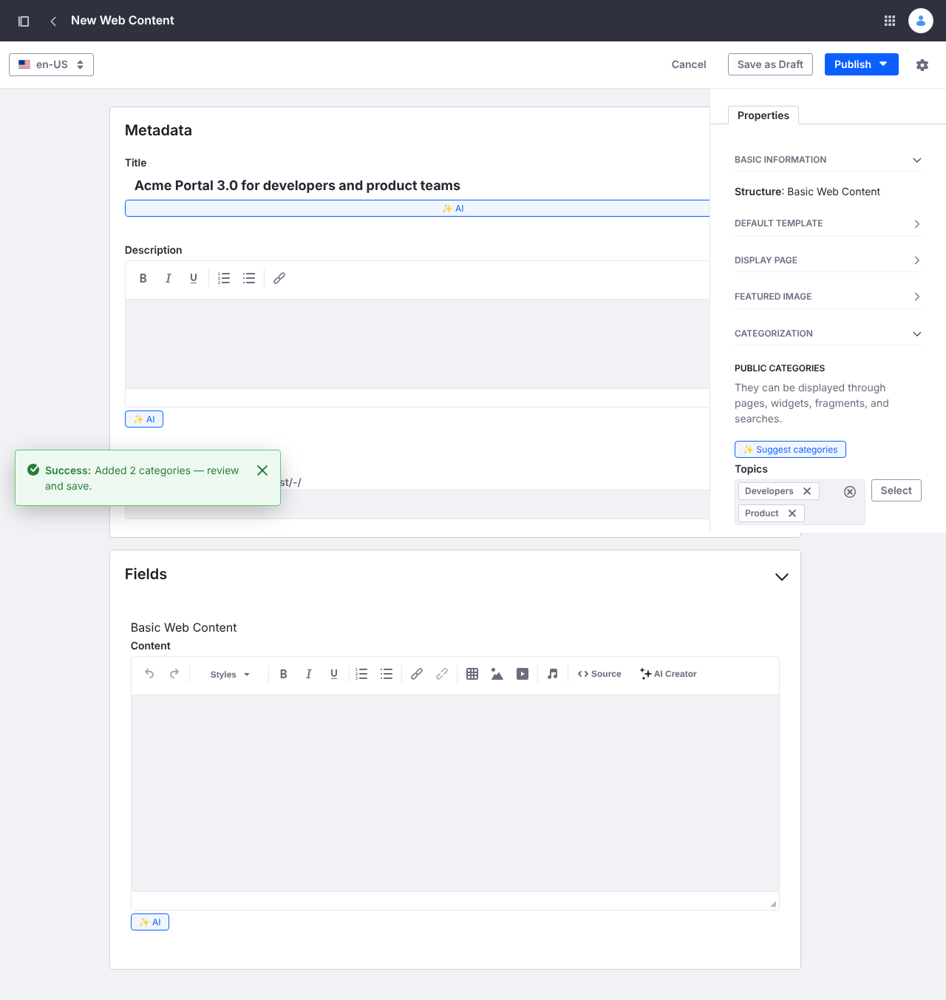

Bring Liferay AI Hub to the DXP releases that predate the AI Hub cell. This connector adds the AI Hub chat widget and the in-editor AI Assistant — writing tools, tag and category suggestions, field and image generation, and translation — to 2024.Q1 through 2025.Q4, with a per-user token and a server-side proxy, and steps aside once you upgrade to 2026.Q1 or later. It reuses your licensed AI Hub subscription.
Report an issue or suggest a feature →Features
- AI Hub chat on every page. The AI Hub chat widget, set in Instance and Site Settings the way the 2026.Q1+ cell provides it — on every page, without changing Liferay's code.
- In-editor AI Assistant. Writing tools, suggest tags and categories, generate a field value or an image, and translate content into the site's other languages, right inside the Web Content editor.
- Secure by default. A per-user token so the chat acts as the signed-in user, and a server-side proxy that keeps AI Hub's access token out of the browser.
- Steps aside on upgrade. Deactivates itself automatically where Liferay's own AI Hub cell is present, so moving to 2026.Q1 or later needs no cleanup.
- Across eight releases. Validated on DXP 2024.Q1, Q2, Q3, Q4 and 2025.Q1, Q2, Q3, Q4, each on the latest update of the quarter.
- Uses your AI Hub subscription. The connector reuses your licensed Liferay AI Hub; it isn't a model provider and doesn't replace an AI Hub subscription.
Screenshots

